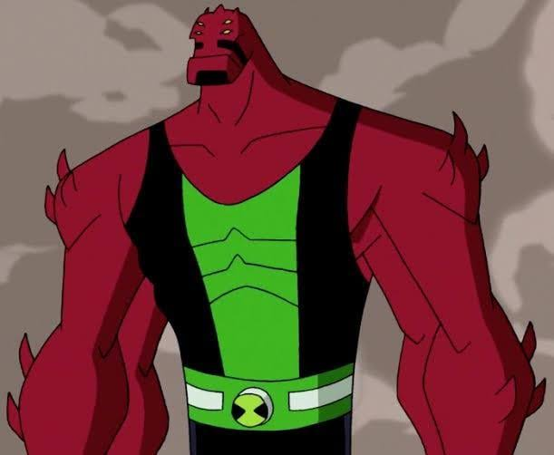

Quatro Braços

Voltar
Descrição do Alien Quatro Braços
O Quatro Braços é um alienígena humanoide com quatro braços, pertencente à espécie 4-B do planeta 4-B.
Ele é uma das transformações mais fortes de Ben Tennyson na franquia Ben 10